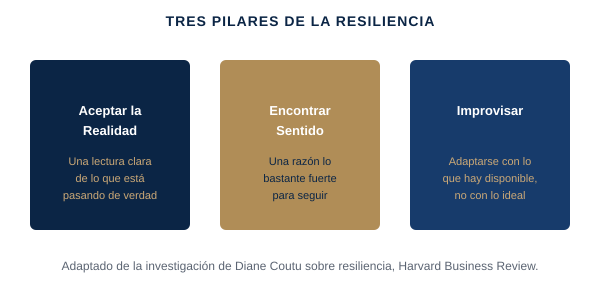

Los líderes resilientes no son los que menos sienten bajo presión. Son los que ven la situación con claridad, se sujetan a lo que de verdad importa, y siguen adaptándose en vez de bloquearse o fingir una certeza que no tienen.
Liderar a un equipo en una reorganización o una ronda de despidos sin volverte insensible tú mismo; recuperar tu propia energía y criterio después de que un proyecto falle públicamente; seguir siendo útil para tu equipo en un periodo sin fecha de fin clara.
En una de las investigaciones más citadas de Harvard Business Review sobre el tema, la consultora Diane Coutu estudió a personas y organizaciones que se recuperaron bien de reveses serios, y encontró que el patrón casi no tenía que ver con el optimismo o la garra en el sentido popular. Se reducía a tres cosas: una aceptación clara de la realidad (no negación, no positividad forzada — una lectura honesta de lo que realmente está pasando), una creencia profunda en que la vida y el trabajo tienen sentido incluso en periodos difíciles (no un sistema de creencias concreto, solo una razón lo bastante fuerte para seguir), y una capacidad de improvisar con lo que hay disponible, en vez de esperar a tener recursos o condiciones ideales. Los líderes que muestran resiliencia real no son los que menos sienten — son los que se permiten ver la situación con claridad, se sujetan a lo que importa, y siguen adaptándose en vez de bloquearse o fingir una certeza que no tienen.

Adaptación simplificada y con fines formativos de la investigación de Diane Coutu sobre resiliencia, Harvard Business Review.
Las tres cosas que hacen distinto los líderes resilientes → la investigación de Coutu, aplicada a tu situación actual.
Vídeo extendido (15-25 min), un PDF framework/checklist propio, un workbook de aplicación práctica, y un resumen curado de la investigación de Diane Coutu sobre resiliencia y el trabajo de Adam Grant sobre el crecimiento postraumático.
Gratuito si eres cliente de coaching activo · El acceso por suscripción para el público general se abrirá próximamente.